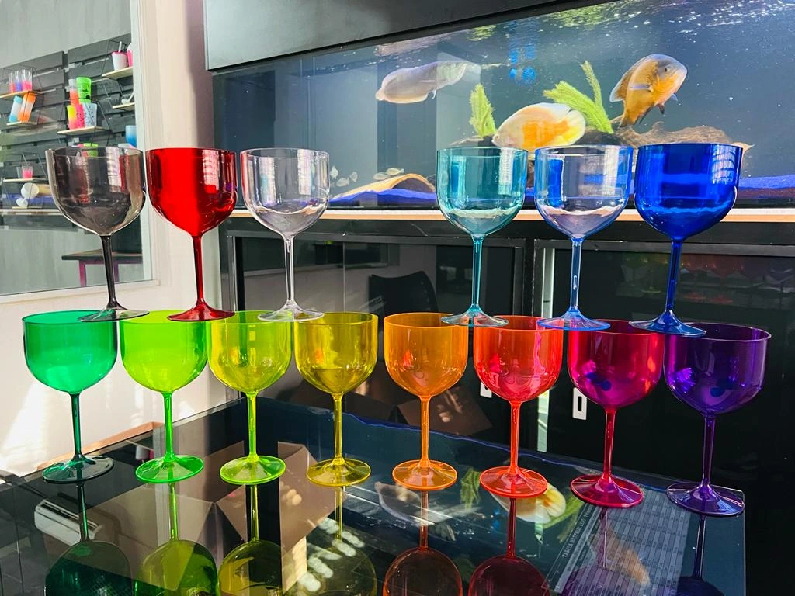
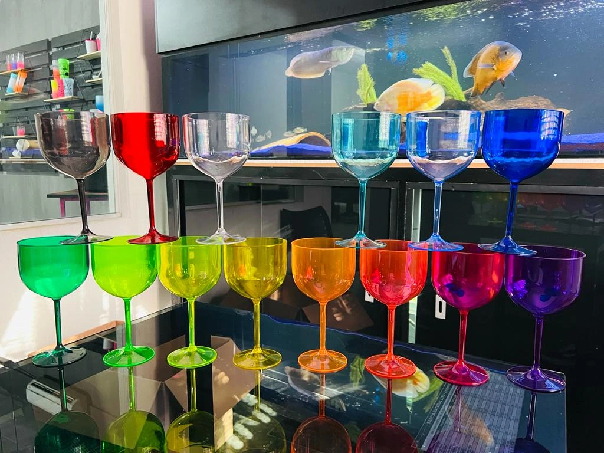

Espaço Ramalho Confort
Conheça nosso espaço
Diamante


Faça sua reserva
Sobre Nós
Bem-vindo ao Espaço Nobre!
O Espaço Nobre é um restaurante de alta gastronomia, onde a sofisticação e o sabor se encontram em perfeita harmonia. Localizado no coração da cidade, nosso ambiente foi projetado para oferecer uma experiência única, acolhedora e exclusiva.
Nosso cardápio é cuidadosamente elaborado, trazendo o melhor da culinária internacional com toques de autor, preparados com ingredientes frescos e selecionados. A cada prato servido, buscamos proporcionar uma verdadeira viagem de sabores e aromas, sempre com a mais alta qualidade.
O que nos torna especiais?
Além de nossa culinária requintada, o Espaço Nobre é reconhecido pela excelência no atendimento. Nossa equipe está sempre pronta para oferecer um serviço personalizado, garantindo que cada visita seja memorável.
Seja para um jantar romântico, uma reunião de negócios ou uma celebração especial, o Espaço Nobre é o local ideal para criar momentos inesquecíveis.
Visite-nos
Estamos abertos de segunda a sábado, das 18h às 23h. Não deixe de fazer sua reserva e garantir sua mesa para uma noite deliciosa e cheia de sabor!

.webp) 

Você é nosso convidado especial!
O Espaço Nobre abre as portas para uma noite inesquecível.
Das 18:00 as 23:00, de segunda a sabado.
Prepare-se para viver momentos únicos em um ambiente de pura elegância.
Local: Bairro Novo Horizonte, Rua Daniel Freire, 383